About the Thomas Fire
Part of a string of devastating wildfires that tore through southern California in December of 2017, the Thomas Fire is widely agreed to be one of the largest in California history. Damaging or completely destroying approximately 3,137 structures over the course of 39 days1, the cause of the fire was determined to be downed power lines2 due to strong winds.
A major anthropogenic disaster like the Thomas Fire initiates a cascade of environmental, ecological, and social damages, the extent to which is monitored via large-scale interdisciplinary projects. A key component of the aforementioned process is geospatial analysis of the fire torn region, including the land and atmosphere directly affected by the burn.
In this post, we will walk through a couple examples of preliminary damage assessment using data provided by CAL FIRE, the Environmental Protection Agency (EPA)3, NASA and USGS’s Landsat 8 satellite 4, and data analysis methods developed by the Master’s of Environmental Data Science program at the University of California, Santa Barbara 5.
Assessing Air Quality Index After the Fire
Utilizing Air Quality Index (AQI) data provided by the Environmental Protection Agency, we can assess how the smoke and other air borne particles suspended in the low atmosphere as a result of the Thomas Fire affected air quality.
We start off loading in our libraries and loading in the data as variables with (hopefully) intuitive names( ‘aqi’ for Air Quality Index, and the 17 or 18 for the year 2017 or 2018)

Next, we need to combine our 2017 and 2018 data sets by stacking them, using the pd.concat() function
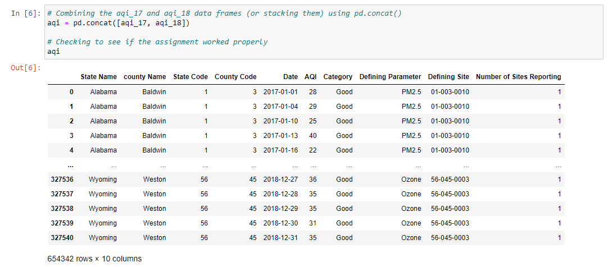
We now have one cohesive data set, and we can make it easier to work with as well, by setting a uniform standard for column naming.
For this task, we use df.columns.str.lower() chained with df.columns.str.replace(), to set all the names to lowercase and replace spaces with underscores.
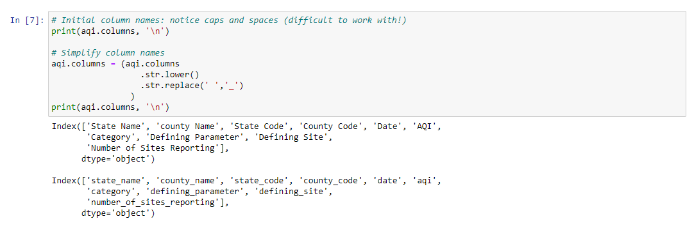
After our names have been made uniform and easier to call, we can filter the data set to our area of interest (Santa Barbara for the area of the Thomas Fire), and then drop all columns related to location identity,(‘county_name’, ‘state_code’, etc.) to omit redundancies.
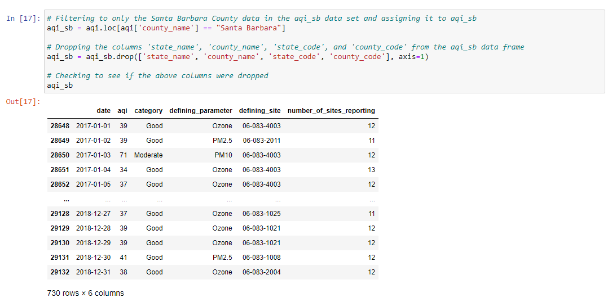
Next, working with the dates…
In Python, a lot of the trickiness of working with dates can be alleviated using the function pd.to_datetime() and providing the column of dates you wish to convert. Unlike other coding languages/interfaces, pandas already has a library of potential date formats it compares your data to, and matches it to any stored in its data base.
Once that’s done, we can set our date column to be our index for easy identification of the observations.
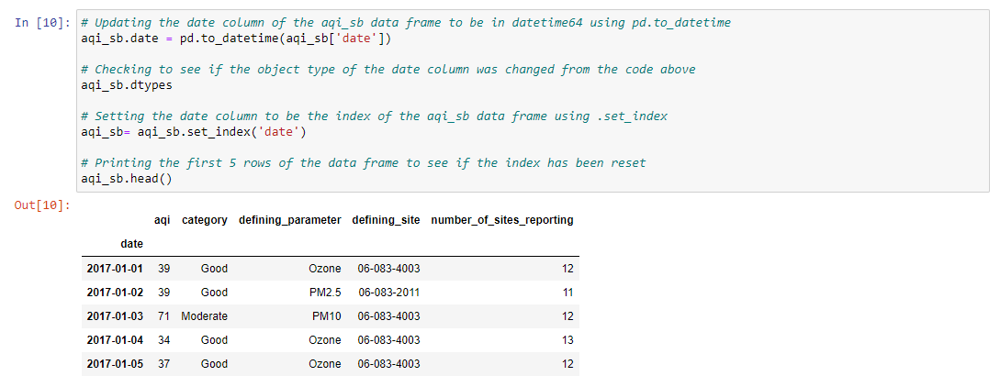
In order to have a metric to compare the AQI to before, during, and after the fire, we need to take averages. However, just taking the average of the three aforementioned instances doesn’t allow for pattern or trend observation with much certainty.
Instead, we will use a 5-day rolling average to hopefully better identify the trend of AQI from the fire. To do this, we will chain the .rolling() and .mean() functions.
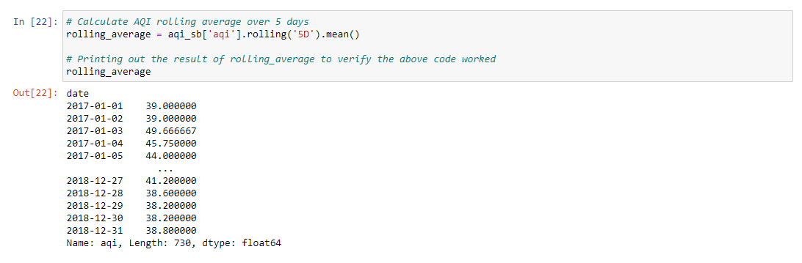
Then we create a new column for this averaged data using the .assign() function.
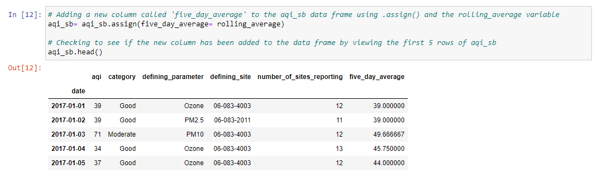
And now the fun part!
We get to plot the lines of the AQI over time in Santa Barbara, using the exact values and the 5-day rolling average.
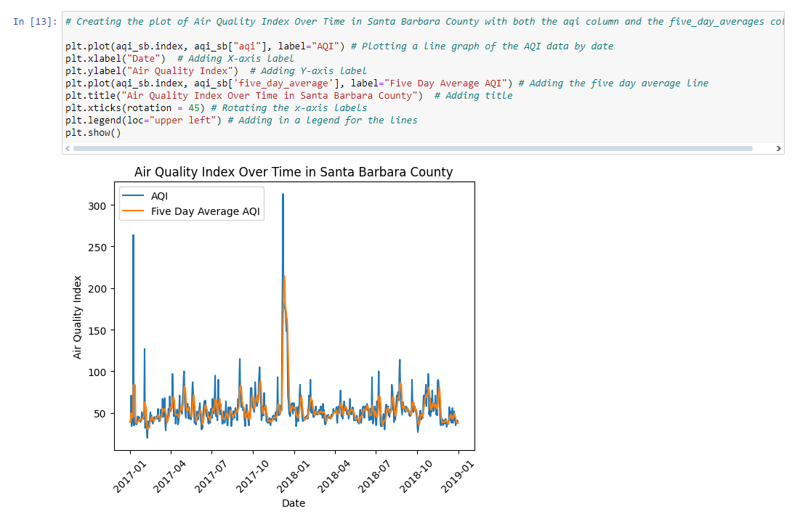
We can clearly see a big spike in trend lines, which corresponds to a huge increase in air pollution around the time of the fire, that decreases over the course of a couple months (which is easier to see using the 5-day average).
Identifying the Thomas Fire Perimeter
To create a true color or false color image of the affected area, we will first need an outline of the extent of the Thomas Fire that we can clip raster data to.
Here is how we can use historical fire data from CAL FIRE to create that boundary.
To start, we will load in our packages and our boundary data as a variable called ‘fire_perimeters’, since it is not yet filtered to only the Thomas Fire.
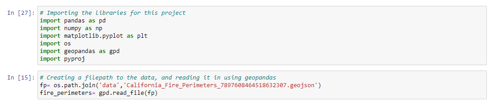
In order to filter the data, we have to specify both the location (Thomas County) and the year (2017), as there unfortunately have been multiple major fires in the Thomas county area, and many other fires that ocurred that year.
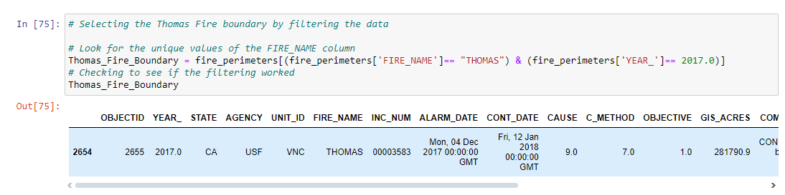
Alright, we now have the boundary of the specific fire we are looking for! We can take a look at the shape of the boundary with a very quick plot. The warning lets us know that there is a new way of specifying geometry type when plotting spatial data, but that doesn’t affect what we are looking for here.
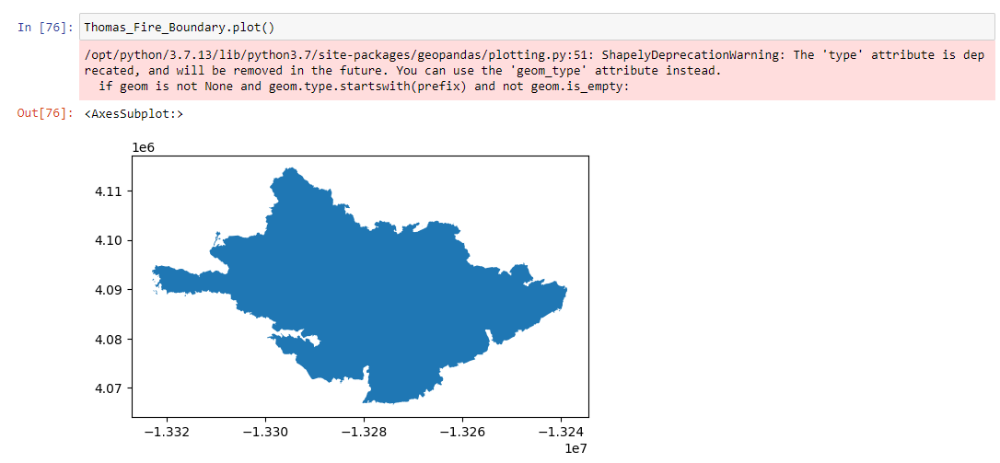
Now that we’ve confirmed the boundary is proper, we can save this file for use in our next map, using ‘name.to_file()’

The warning above let’s us know that column names may be shorted in the Shapefile, but that’s alright as it won’t affect anything we’ve done.
False Color Image of Fire Scars
With our 2017 Thomas Fire Perimeter, we can now utilize the Landsat 8 satellite data to create rasters that show different types of substrate over the area the fire occurred.
The Landsat 8 satellite measures a multitude of radiance wavelengths, but we are mainly interested in red band, blue band, green band, near-infrared (NIR), and shortwave infrared (SWIR22) data.
The data set consists of only one band, with float64 x and y coordinates and our 5 main variables of interest are identified as: - red (red band with wavelengths 0.64-0.67 micrometers),
green (green band with wavelengths 0.53-0.59 micrometers),
blue (blue band with wavelengths 0.45-0.51 micrometers),
nir08 (near-infrared band with wavelengths 0.85-0.88 micrometers),
swir22 (shortwave infrared band with wavelengths from 2.11-2.29 micrometers) .
We begin by, once again, loading in our packages and assigning the data to a variable. However, in this instance our data set consists of layered rasters, which is kept in the ‘xarray’ format using the ‘Rioxarray’ package. This package helps us more easily sift through bands, helping us work with only the wavelengths we want for each type of image.
We will also use os to create a file path to our data.
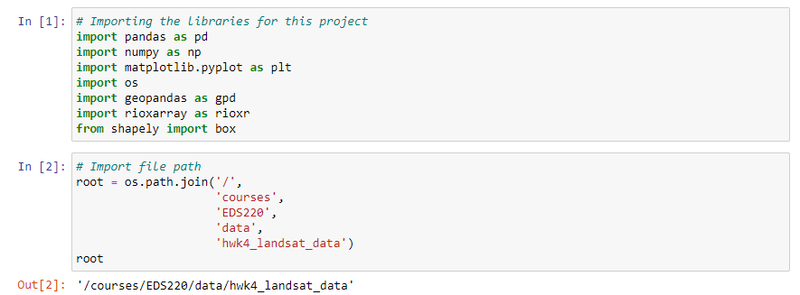
Now we can use that file path to load in our data, and assign it to a variable called ‘landsat’
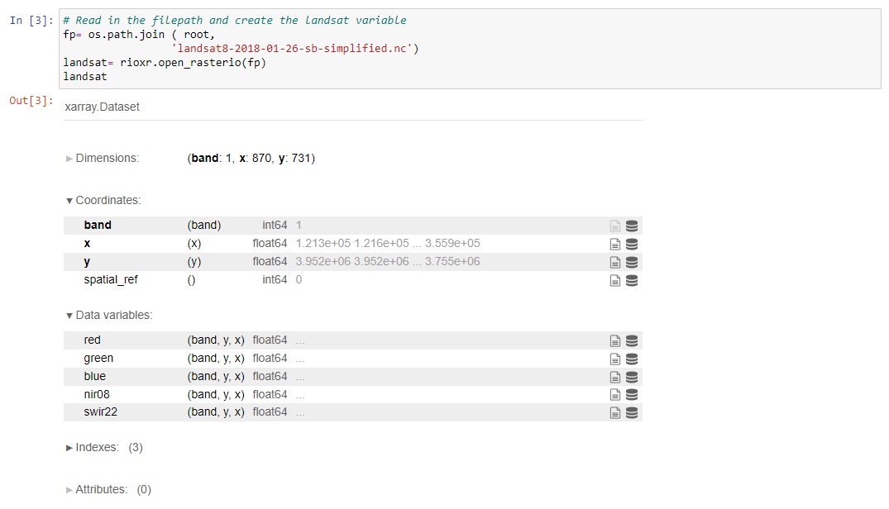
Because there is only one band, we can drop the band information, as it is a redundancy, using .squeeze() to remove the length, and .drop_vars() to remove the band.
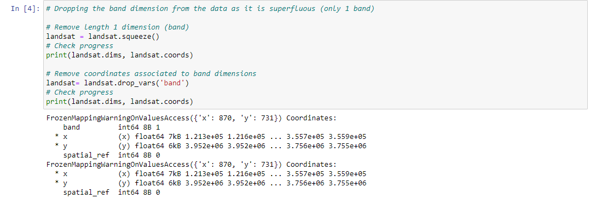
With the band dimension dropped, lets make our first map!
For a true color image, we will assign the red, green, and blue bands to their corresponding colors. By specifying that ‘robust’ = True in the plot.imshow() function, we ensure that the colors are represented appropriately.
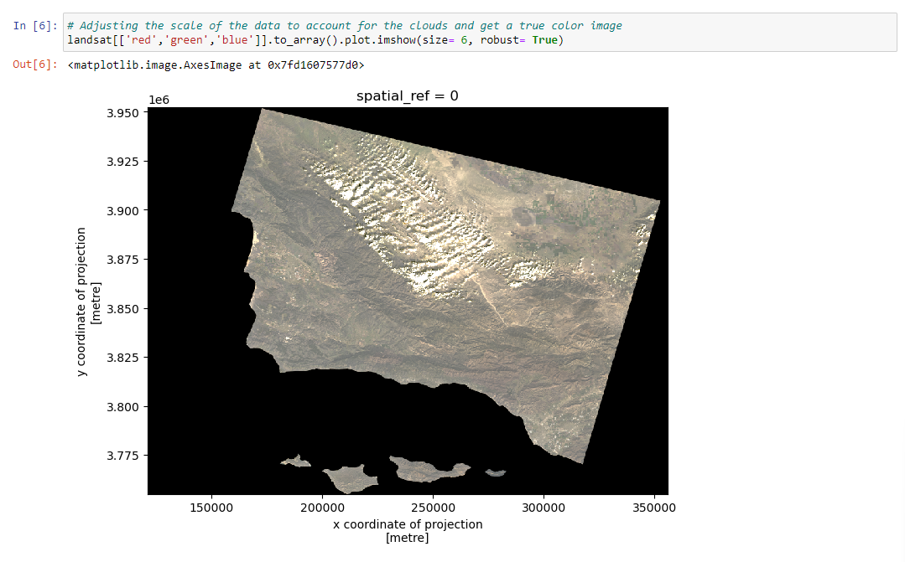
Let’s contrast this model with a false color one, where the scars from the fire, typically displayed in brown in a true color image, will now be displayed in red. This will make it easier to analyze the extent of the fire damage.
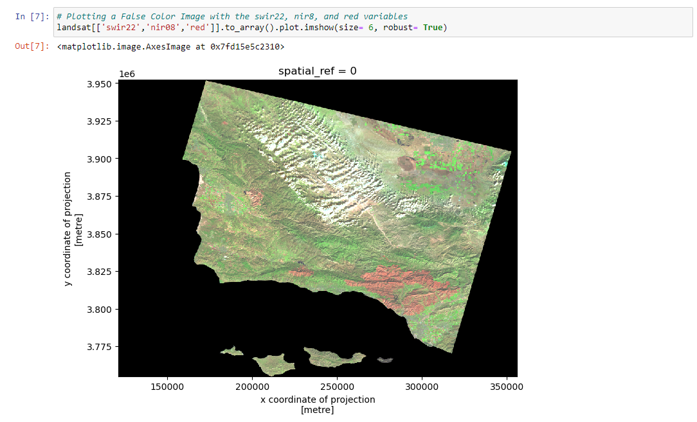
The damaged area from the Thomas Fire can be seen much more clearly now! We can change the extent of the image to “zoom” in to the fire scars now.
First, we will have to load in our fire boundary from earlier. After matching the coordinate reference systems of the data (crs), we can create the false color image clipped to the extent of the Thomas Fire perimeter.
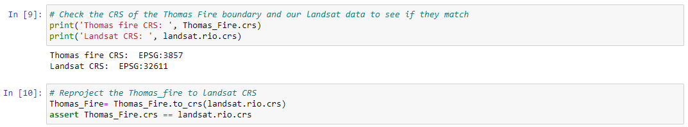
Then we can plot the raster again and examine our area of interest…
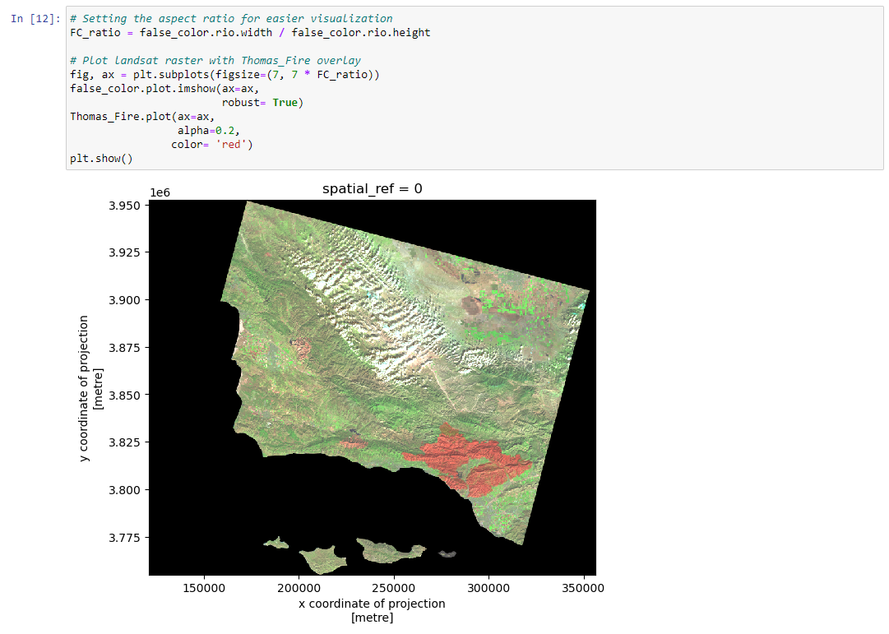
The fire scars are bright red now, and contrast quite well against the rest of the landscape. Using the bounds of the Thomas Fire perimter, we can set the boundary to our area of interest ansd “zoom” in on the scars.
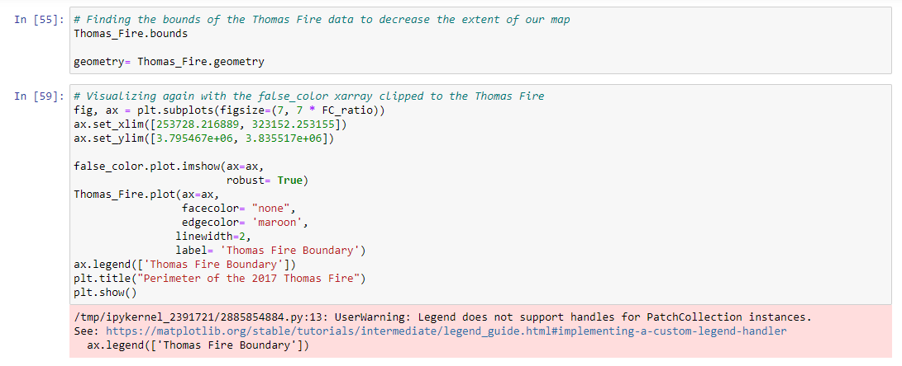
Finally…we have a simple map of the extent of the 2017 Thomas Fire Damage!
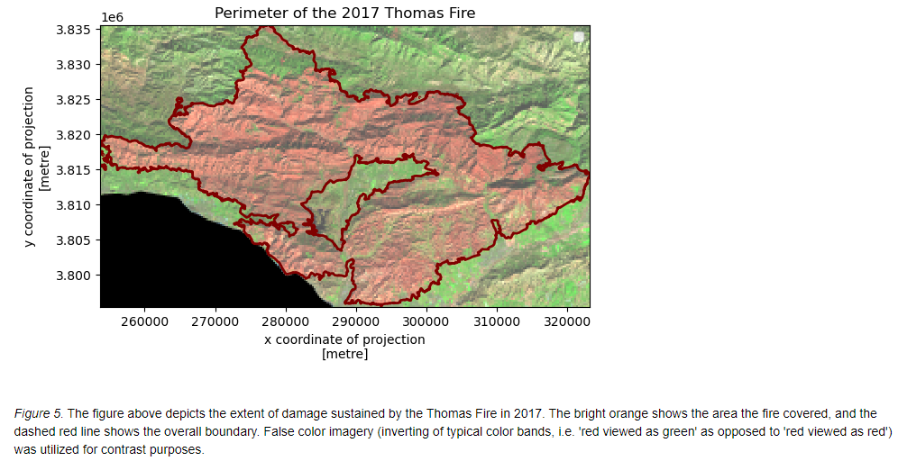
Link to Repository
There is a link to the repository provided in the sidebar, where all of the Jupyter Notebooks are housed, in case you would like to run the code for yourself.
Footnotes
CAL FIRE. (2017). “Thomas Fire”, Incidents. www.fire.ca.gov/incidents/2017/12/4/thomas-fire/. Last updated 09/23/2024. Date accessed: [12/04/2024]↩︎
Ventura County Fire Department. (2019). “VCFD Determines Cause of the Thomas Fire”, news. www.vcfd.org/news/vcfd-determines-cause-of-the-thomas-fire/. Date accessed: [12/04/2024]↩︎
Environmental Protection Agency. (2024). “Air Quality Index Basics”, Air Now.https://www.airnow.gov/aqi/aqi-basics/. date accessed: [12/04/2024]↩︎
NASA, USGS, Microsoft.(2024). “Landsat Collection 2 Level-2”, Planetary Computer. https://planetarycomputer.microsoft.com/dataset/landsat-c2-l2. date accessed: [11/23/2024]↩︎
Galaz Garcia, C. (2024). Assignment #4, EDS 220 Working With Environmental Datasets, Masters of Environmental Data Science. University of California, Santa Barbara. https://meds-eds-220.github.io/MEDS-eds-220-course/assignments/assignment4.html. date accessed: [12/04/2024]↩︎